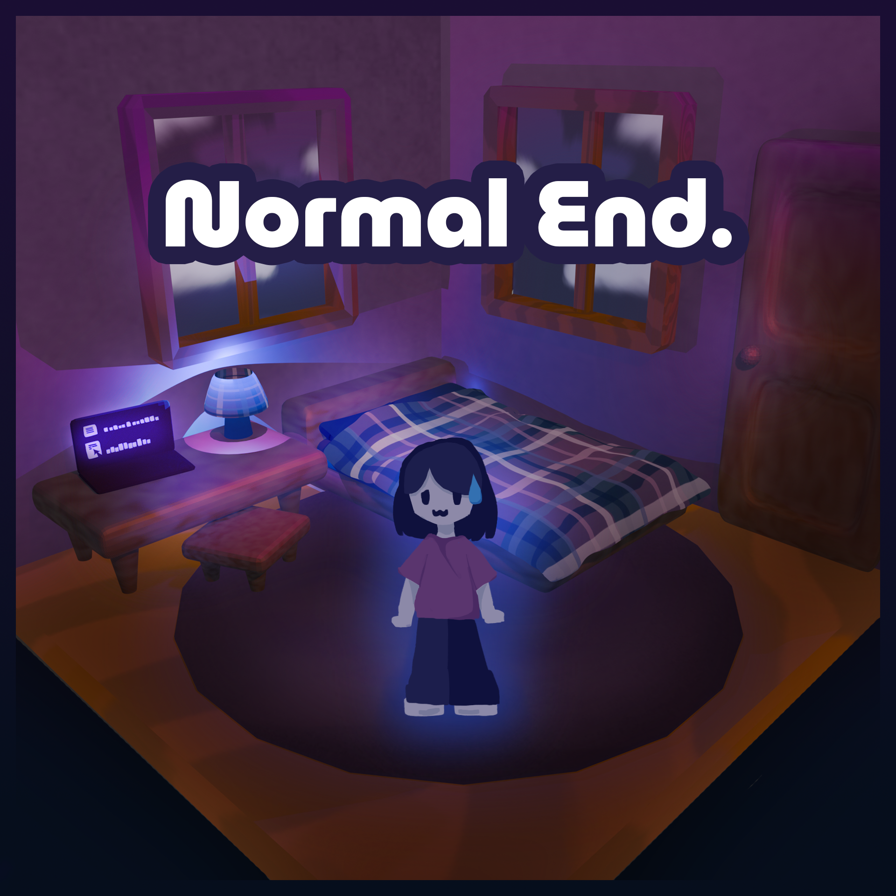

The brief studying did indeed help the protagonist a bit, and she did okay on her exams! She is feeling relieved that she made the right
choice to balance her studying with her free time, and she is relatively happy that she can now enjoy the rest of her day without worrying
about her tests. She is a little sad that she didn't do as well as she could have if she had studied more, but she is still proud of herself
for doing the best that she could with the time that she had.
